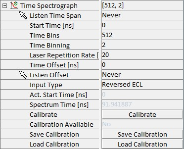

|
时间光谱仪
|
时间光谱仪参数组包含 时间分辨光谱学所需的参数。
更多信息（操作指南）：

监听 时间跨度
如果激活，可以通过鼠标在时间光谱中选择时间跨度。
起始时间 [ns]
此参数将时间光谱向左偏移。
时间仓
此参数定义每个光谱记录多少个时间仓。一个仓是控制器可以检测的最小时间差，略低于 30 ps。
时间合并
此参数用于将选定数量的仓合并为时间轴上的一个像素。较高的值可提高信噪比，但会降低分辨率。
激光重复率 [MHz]
激光重复率参数必须与激励激光器的重复率完全匹配。
时间偏移 [ns]
时间偏移可用于偏移 X 轴，直到时间 0 对应于典型时间光谱开始处陡峭增加所标记的实际起始时间。
监听 偏移
如果激活，可以通过鼠标在时间光谱中选择偏移。
输入类型
ECL
不推荐。使用 TDC 卡的 NIM 输入。激光脉冲作为起始信号，APD 作为停止信号。
TTL
仅用于测试。使用 TDC 卡的 TTL 输入。激光脉冲作为起始信号，APD 作为停止信号。
反转 ECL
这是默认设置。使用 TDC 卡的 NIM 输入。APD 作为起始信号，激光脉冲作为停止信号。
反转 TTL
仅用于测试。使用 TDC 卡的 TTL 输入。APD 作为起始信号，激光脉冲作为停止信号。
实际起始时间 [ns]
显示当前使用的起始时间。
光谱时间 [ns]
显示一个光谱的当前时间跨度。
校准
启动校准过程。
校准可用
显示校准是否可用。
保存校准
将当前校准保存到文件。
加载校准
加载之前记录的校准。